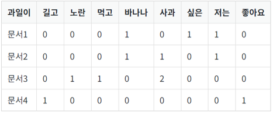

절단된 SVD(Truncated SVD): - 대각 행렬 \(\Sigma\)의 대각 원소의 값 중에서 상위값 \(t\)개만 남김, \(U\)행렬과 \(V\)행렬의 \(t\)열까지만 남김 - 계산 비용이 낮아지는 것 외에도 상대적으로 중요하지 않은 정보를 삭제하는 효과 - 여기서, \(t\)는 토픽의 수
LSA
LSA: DTM이나 TF-IDF 행렬에 truncated SVD 사용해 차원을 축소

축소된 \(U (4 × 2)\)는 문서의 개수 × 토픽의 수 \(t\)의 크기 \(U\)의 각 행은 잠재 의미를 표현하기 위해 수치화 된 각각의 문서 벡터
축소된 \(V^{T} (2 × 9)\)는 토픽의 수 \(t\) × 단어의 개수의 크기 \(V^{T}\)의 각 열은 잠재 의미를 표현하기 위해 수치화 된 각각의 단어 벡터
이 문서 벡터들과 단어 벡터들을 통해 다른 문서의 유사도, 다른 단어의 유사도, 단어(쿼리)로부터 문서의 유사도를 구하는 것들이 가능
문서-토픽 행렬 (\(U\)):
각 행은 원본 문서를 나타내고, 각 열은 하나의 토픽을 나타냄.
이 행렬의 값은 해당 문서가 각 토픽과 얼마나 관련이 있는지를 나타내는 가중치임. 값이 클수록 문서가 그 토픽과 더 관련이 깊다는 것을 의미함.
토픽의 중요도를 나타내는 대각 행렬 (\(\Sigma\)):
이 대각선에 위치한 값들은 각 토픽의 중요도 또는 “특이값”을 나타냄.
값이 큰 토픽은 데이터 세트 전체에 걸쳐 더 많은 정보를 담고 있다고 해석할 수 있음. 이를 통해 가장 중요한 토픽을 식별할 수 있음.
토픽-단어 행렬 (\(V^T\)):
각 행은 하나의 토픽을 나타내고, 각 열은 원본 데이터 세트의 단어를 나타냄.
이 행렬의 값은 특정 단어가 토픽에 속하는 정도를 나타내는 가중치임. 값이 클수록 해당 단어는 그 토픽을 잘 대표한다는 의미임.
import numpy as npimport pandas as pdfrom sklearn.feature_extraction.text import TfidfVectorizerfrom sklearn.decomposition import TruncatedSVD# 샘플 문서들documents = ["The cat in the hat disabled the server.","A quick brown fox jumps over the lazy dog.","The server is down for maintenance.","Foxes are wild animals.","The cat is resting in the sun.",]# TF-IDF 벡터라이저를 사용하여 문서-단어 행렬 생성vectorizer = TfidfVectorizer()X = vectorizer.fit_transform(documents)# TruncatedSVD를 사용하여 LSA 적용num_topics =2# 원하는 토픽의 수lsa = TruncatedSVD(n_components=num_topics)X_lsa = lsa.fit_transform(X)# 결과 출력terms = vectorizer.get_feature_names_out()# 각 토픽 별 단어 중요도 출력for i, comp inenumerate(lsa.components_): terms_in_comp =zip(terms, comp) sorted_terms =sorted(terms_in_comp, key=lambda x: x[1], reverse=True)[:10]print(f"Topic {i+1}:")for term in sorted_terms:print(term)print("\n")# 각 문서의 토픽 분포 출력df = pd.DataFrame(X_lsa, columns=[f'Topic {i+1}'for i inrange(num_topics)])print(df)
LSA는 쉽고 빠르게 구현이 가능할 뿐만 아니라 단어의 잠재적인 의미를 이끌어낼 수 있어 문서의 유사도 계산 등에서 좋은 성능을 보임
하지만 SVD의 특성상 이미 계산된 LSA에 새로운 데이터를 추가하여 계산하려고 하면 처음부터 다시 계산해야 함. 즉, 새로운 정보에 대해 업데이트가 어려움
Word2Vec 등 단어의 의미를 벡터화할 수 있는 또 다른 방법론인 인공 신경망 기반의 방법론 사용
SVD는 normally distribute을 가정하지만, term occurrence는 보통 normally distributed 되지 않음
LDA
잠재 디리클레 할당(Latent Dirichlet Allocation, LDA)은 토픽 모델링의 대표적인 알고리즘
LDA는 문서들은 토픽들의 혼합으로 구성되어져 있으며, 토픽들은 확률 분포에 기반하여 단어들을 생성한다고 가정
LDA는 각 문서의 토픽 분포와 각 토픽 내의 단어 분포를 추정
데이터가 주어지면, LDA는 문서가 생성되던 과정을 역추적
LDA는 DTM 또는 TF-IDF 행렬을 입력으로 함. 즉, LDA는 단어의 순서는 신경쓰지 않음
LDA 실행 순서
사용자는 토픽의 개수 k를 설정
LDA는 토픽의 개수 k를 입력 받으면, k개의 토픽이 M개의 전체 문서에 걸쳐 분포되어 있다고 가정
모든 단어를 k개 중 하나의 토픽에 할당
모든 문서의 모든 단어에 대해서 k개 중 하나의 토픽을 랜덤으로 할당
각 문서는 토픽을 가지며, 토픽은 단어 분포를 가지는 상태
이제 모든 문서의 모든 단어에 대해서 아래 사항을 반복 진행(iterative)
어떤 문서의 각 단어 w는 자신은 잘못된 토픽에 할당되어져 있지만, 다른 단어들은 전부 올바른 토픽에 할당되어져 있는 상태라고 가정
이에 따라 단어 w는 아래의 두 가지 기준에 따라서 토픽 재할당
p(topic t | document d) : 문서 d의 단어들 중 토픽 t에 해당하는 단어들의 비율
p(word w | topic t) : 각 토픽들 t에서 해당 단어 w의 분포
LDA 모델 아키텍처
LDA의 문서생성과정
D는 말뭉치 전체 문서 개수, K는 전체 토픽 수, N은 d번째 문서의 단어 수
네모 칸은 해당 횟수만큼 반복하라는 의미, 동그라미는 변수
화살표가 시작되는 변수는 조건, 화살표가 향하는 변수는 결과에 해당하는 변수
우리가 관찰 가능한 변수는 d번째 문서에 등장한 n번째 단어 𝑤_(𝑑,𝑛) 가 유일(음영 표시)
이 정보만을 가지고 하이퍼파라미터(사용자 지정) α, β를 제외한 모든 잠재 변수를 추정
\(𝜙_𝑘\)
\(𝜙_𝑘\)는 k번째 토픽에 해당하는 벡터 - \(𝜙_𝑘\)의 각 요소값은 해당 단어가 k번째 토픽에서 차지하는 비중 - \(𝜙_𝑘\)의 각 요소는 확률이므로 모든 요소의 합은 1이 됨. 벡터 길이는 말뭉치 전체 단어 수. - \(𝜙_𝑘\)는 하이퍼파라메터 \(β\)에 영향을 받으며, 이는 LDA가 토픽의 단어비중 \(𝜙_𝑘\)이 디리클레분포를 따른다는 가정을 취하기 때문 \(𝜙_(𝑘 )~ 𝐷𝑖𝑟(𝛽)\) - 디리클레분포란 k차원의 실수 벡터 중 벡터의 요소가 양수이며 모든 요소를 더한 값이 1인 경우에 확률값이 정의되는 연속확률분포
\(𝜃_𝑑\)
\(𝜃_𝑑\)는 d번째 문서가 가진 토픽 비중을 나타내는 벡터
\(𝜃_𝑑\)의 각 요소값은 k번째 토픽이 해당 d번째 문서에서 차지하는 비중
\(𝜃_𝑑\)는 확률이므로 모든 요소의 합은 1. 벡터 길이는 전체 토픽 개수 K.
\(𝜃_𝑑\)는 하이퍼파라메터 \(𝛼\)에 영향을 받으며, 이는 LDA가 문서의 토픽비중 \(𝜃_𝑑\)이 디리클레분포를 따른다는 가정을 취하기 때문 \(𝜃_𝑑~𝐷𝑖𝑟(𝛼)\)
\(𝑧_{(𝑑,𝑛)}\)
\(𝑧_{(𝑑,𝑛)}\)은 d번째 문서 n번째 단어가 어떤 토픽에 해당하는지 할당해주는 역할
예: 세번째 문서의 첫번째 단어 \(𝑧_{3,1}\)는 ’Topic2’일 가능성이 높음.
\(𝑤_{(𝑑,𝑛)}\)
\(𝑤_{(𝑑,𝑛)}\)은 문서에 등장하는 단어를 할당해주는 역할
\(𝜙_𝑘\)와 \(𝑧_{(𝑑,𝑛)}\)에 동시에 영향을 받음.
직전 예에서 \(𝑧_{3,1}\) 이 실제로 Topic2에 할당됐다고 쳤을 때, \(𝜙_2\)를 보면 \(𝑤_{3,1}\)은 Money가 될 가능성이 높음
LDA inference
이제 𝑤_(𝑑,𝑛)를 가지고 잠재변수를 역으로 추정하는 inference 과정을 살펴보자.
실제 관찰가능한 문서 내 단어를 가지고 우리가 알고 싶은 토픽의 단어분포, 문서의 토픽분포를 추정하는 과정
LDA가 가정하는 문서생성과정이 합리적이라면 해당 확률과정이 갖고 있는 말뭉치를 제대로 설명할 수 있어야함.
즉, 토픽의 단어분포와 문서의 토픽분포의 결합확률이 커지도록 해야 함.
위 수식에서 사용자가 지정한 \(𝛼\), \(𝛽\)와 관찰가능한 \(𝑤_{(𝑑,𝑛)}\)을 제외한 모든 변수는 미지수
따라서 사후확률(posterior) \(𝑝(𝜙, 𝜃,𝑧|𝑤)\)를 최대로 만드는 \(𝑧,𝜙, 𝜃\)를 찾아야 함.
그러나, 이를 계산하는 것은 매우 어려움 (분모인 p(w)을 단번에 계산할 수 없음 \(z,ϕ,θ\)의 모든 경우의 수 알아야함)
–> Approximate : Collapsed Gibbs sampling을 사용
Collapsed Gibbs Sampling
디리클레 분포 (Dirichlet distribution)
사용자가 지정하는 하이퍼파라미터 \(α\) 존재 덕분에 \(A\)가 아예 0으로 되는 일을 막을 수 있게 됨
일종의 smoothing 역할
\(α\)는 mean shape와 \(𝜃\)의 sparsity를 조정
\(α\)가 클수록 토픽들의 분포가 비슷해지고, 작을 수록 특정 토픽이 크게 나타남.
\(β\)가 \(B\)에서 차지하는 역할도 같음
import pandas as pdimport gensimfrom gensim import corporafrom gensim.models.ldamodel import LdaModelfrom nltk.corpus import stopwordsfrom sklearn.datasets import fetch_20newsgroupsfrom nltk.tokenize import word_tokenizeimport nltknltk.download('punkt')nltk.download('stopwords')# 데이터 다운로드 및 불러오기 (예: UCI의 20 뉴스그룹 데이터셋)newsgroups_data = fetch_20newsgroups(subset='all')['data']
[nltk_data] Downloading package punkt to
[nltk_data] C:\Users\master\AppData\Roaming\nltk_data...
[nltk_data] Package punkt is already up-to-date!
[nltk_data] Downloading package stopwords to
[nltk_data] C:\Users\master\AppData\Roaming\nltk_data...
[nltk_data] Package stopwords is already up-to-date!
# 전처리: 토큰화 및 불용어 제거stop_words =set(stopwords.words('english'))def preprocess(text): tokens = word_tokenize(text.lower()) tokens = [word for word in tokens if word.isalpha()] tokens = [word for word in tokens if word notin stop_words]return tokens# 데이터프레임으로 변환하고 전처리 수행data = pd.DataFrame({'content': newsgroups_data})data['tokens'] = data['content'].apply(preprocess)
# 사전과 코퍼스 생성dictionary = corpora.Dictionary(data['tokens'].dropna().tolist())corpus = [dictionary.doc2bow(text) for text in data['tokens'].dropna().tolist()]
# LDA 모델 학습num_topics =5# 원하는 토픽의 수lda_model = LdaModel(corpus, num_topics=num_topics, id2word=dictionary, passes=15, random_state=42)
# 각 토픽별 단어 중요도 출력for i, topic in lda_model.print_topics(num_topics=num_topics, num_words=10):print(f"Topic {i+1}: {topic}")
# 각 문서의 토픽 분포 출력doc_topics = lda_model.get_document_topics(corpus)# 각 문서별로 토픽 분포를 정리하여 데이터프레임으로 변환doc_topic_dist = []for doc in doc_topics: topic_dist = [0] * num_topicsfor topic_num, prob in doc: topic_dist[topic_num] = prob doc_topic_dist.append(topic_dist)topic_df = pd.DataFrame(doc_topic_dist, columns=[f'Topic {i+1}'for i inrange(num_topics)])print(topic_df)
앞에서 본 LSA, LDA는 문서들의 단어 출현 빈도 기반의 BoW로 설명되기 때문에, 단어들 간의 의미론적 관계를 포착하지 못하는 한계가 있음
한편, BERT와 같은 트랜스포머 인코더 기반의 모델은 단어들 간의 양방향 문맥이 반영된 표현을 생성할 수 있음
BERTopic
document의 정보를 파악한 임베딩 생성
임베딩 방법론으로는 보통 Sentence-BERT(SBERT), distil-BERT 등 사용
해당 임베딩으로 차원 축소 및 클러스터링 수행
UMAP을 활용한 차원 축소 방식, k-Means나 HDBSCAN 클러스터링과 함께 사용
Class-based TF-IDF를 통해 토픽의 representation 생성
class-based TF-IDF는 개별 document가 아닌, document 클러스터(토픽) 관점에서 각 단어들의 중요도를 모델링
참고자료
딥 러닝을 이용한 자연어 처리 입문(https://wikidocs.net/book/2155)
ratsgo’s blog (https://ratsgo.github.io/from%20frequency%20to%20semantics/2017/06/01/LDA/)
Simon’s Research Center (https://zerojsh00.github.io/posts/BERTopic/)
Unstructured Data Analysis (Graduate) @Korea University (https://github.com/pilsung-kang/text-analytics)
Sievert, Carson, and Kenneth Shirley. “LDAvis: A method for visualizing and interpreting topics.” Proceedings of the workshop on interactive language learning, visualization, and interfaces. 2014.